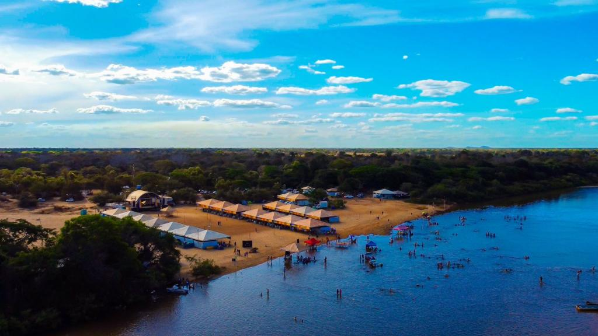
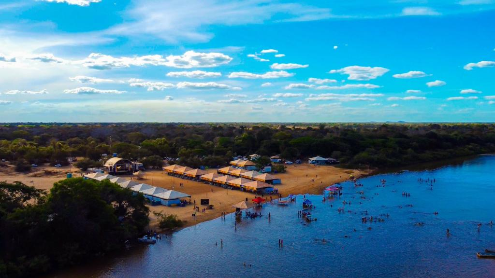
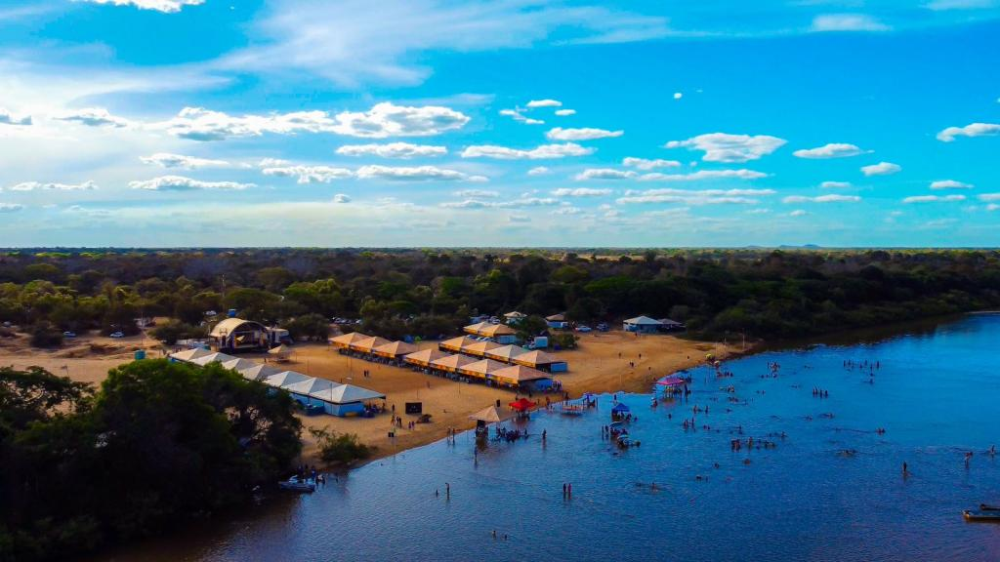
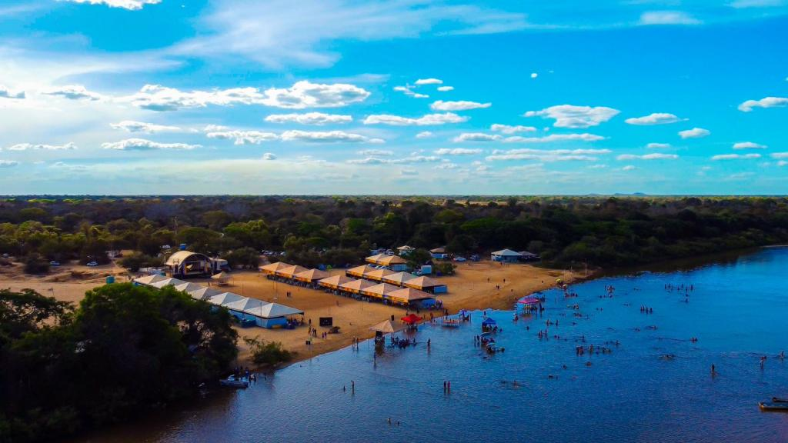

A Ilha do Bananal, localizada no estado do Tocantins, é famosa por ser a maior ilha fluvial do mundo, com uma área de aproximadamente 25.000 km². Ilha fluvial é toda e qualquer porção de terras cercada de águas de rios por todos os lados. No caso, os rios são o Araguaia e o Javaés. Ela situa-se na divisão do Tocantins com os estados de Goiás e Mato Grosso, integrando os municípios de Pium, Caseara, Lagoa da Confusão, Formoso do Araguaia e Marianópolis do Tocantins. Localiza-se no relevo da Planície do Cantão e possui uma altitude